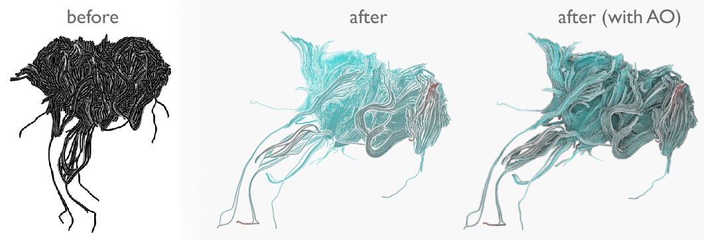

This is my portfolio; A non-comprehensive list of projects I worked on. This list contains projects in fields such as iOS, Mac, and Android development, as well as computer graphics, medical visualization, image processing, custom multi-touch installations and open source.
{kind=link}
Medical Classrooms
iPad
For a client in California, I designed and developed an iOS app for medical classrooms. It performs real-time, three-dimensional rendering of medical volume data (CT, MRI) using OpenGL ES 2. The app allows for extensive digital interactivity between multiple instances of the app on the network. Students and teachers were all equipped with iPads of the second generation.
The skull displayed is mine; Do you recognize me?
Piki (by Turntable.fm)
iPhone
Piki was a high-profile, Apple-featured, and beautifully designed social music application. The basic premise was that your friends and the people you follow would ‘pick’ songs that they like, thereby curating a music radio stream for you. You in turn would pick your own songs and your followers would listen to them, repick them, comment and react to them, or just send you a message thanking you for showing them a great new song.
Shortly after its release, it worked its way up into the list of the most frequently downloaded iPhone apps. The app received quite a bit of positive media coverage.
I worked intensively on the iPhone app, implementing several key screens and features, including many iterations thereof.
VoodooPad
iPhone, iPad, Mac
VoodooPad is a personal wiki that you use to capture your thoughts and notes in the form of text, images, lists and such. The contents are structured following the wiki principle, i.e. you can create hyperlinks between pages of a document.
I was involved in the development of VoodooPad for iOS after Plausible Labs aquired it. VoodooPad for the Mac is a very mature project that exists for over 10 years now. It has tons of features and brings with it a very loyal consumer base. I worked towards bringing the same powerful functionality (especially RTF-editing support) to its iOS counterpart.
pingmd
iPhone, iPad, Android
pingmd is a simple, fast, and secure way for patients, caregivers, and healthcare providers to communicate. Patients use the pingmd app to ping their doctors to describe any health concern they might have. Patients answer questions about symptoms, and can add photos & videos. Doctors can respond to their patients from within the app, or consult colleagues on a case-by-case basis.
I worked on the iPhone and Android apps, implementing several different screens and features.
Comics by comiXology
iPhone, iPad
Comics is the definitive comics experience for the iPad and iPhone. It offers over 12,000 titles and provides premium content through exclusive partnerships with Marvel and DC Comics.
I added some features to the Comics iPhone and iPad apps, which frequently appear in the top-grossing apps section of the US App Store.
I also developed a prototype of an internal tool that employed computer vision techniques to map bitmaps generated from their database (vector graphics) of comics to the original comic and page. This included detection of the affine transformations between matches, and detection of optical differences (e.g. typo corrections).
HockeyApp
Mac
HockeyApp is a platform that helps iOS, Mac, Android, and Windows Phone developers to:
- Collect the best crash reports for iOS/Mac/Android.
- Get feedback from their users.
- Distribute beta versions of their apps.
- Analyze their test coverage.
I worked on HockeyApp for Mac, HockeyApp’s companion app that helps developers integrate HockeyApp into their existing applications. The application also allows uploading app builds as they are created, and facilitates using crash report data.
Taposé
iPad
Zanther Inc. develops the initially crowd-funded iPad application Taposé. Originally developed by an external company, the code base grew to a massive size over time and needed some loving care.
For a short time in 2012, I helped fixing some of the lower-level issues and made the app more usable on the original iPad.
Brain Nerve Visualization
Medical Visualization, Computer Graphics
I’ve done some work in the field of medical visualization. The main challenge in this field is to make vast sets of data visually comprehensible.
One such attempt is shown below, where I wrote an OpenGL-based prototype with the aim of helping neurosurgeons understand nerves in the human brain better. The input to the program is a diffusion MRI scan of a person’s brain. You then select a region of the brain where you want to see the nerve fibers, e.g. when planning a surgical removal of a tumor, in which you don’t want to damage brain nerves that are practically invisible once you ‘cut a patient open’.
The following image shows the original on the left, and my line art approach in the middle. A temperature-inspired color coding is used to convey distance (red is closer than blue). The image on the right shows an experiment of the same concepts, but with an added ambient occlusion effect.

I have co-authored two papers on this and related visualization techniques:
- “Advanced Line Visualization For HARDI”, Bildverarbeitung für die Medizin (BVM) (2012)
- “An Exploration and Planning Tool for Neurosurgical Interventions”, IEEE Visualization Contest 2010, Honorable Mention
Medical Demo Installation
Image Processing, Computer Graphics
Another project I created has a medical component, too, but is more user interaction centric. It allows medical data to be displayed on custom multi-touch installations. This can be used in medical meetings, or for doctors to explain and demonstrate things to patients. The project was submitted to a CompVis competition and was awarded the first prize (30 projects total).
I built the hardware and wrote the software (the hardware input detection and output generation, and the front-facing app).
Markerless Object Recognition
Image Processing
The following is the result of a relatively short (five week) research & development project for a company in Paris. It makes use of a custom-built multi-touch table (40“). The goal was to allow for recognition and tracking of custom objects as they were placed and moved around on the table’s surface. One of the requirements of the project was that the recognition be based solely on an object’s contour, without the use of active or passive markers.
Hand Recognition & Tracking
Image Processing
As a fun experiment, I decided to implement a hand recognition and tracking algorithm. The input to the program was an image showing my hand. The output is the position of the finger tips, as well as the center of the palm. The following are two frames of a video (i.e. the algorithm operates on a video stream in real-time).
Python for iOS
iPhone, iPad
As part of a fun research project, I’ve worked on porting Python1 to iOS. It allows using Python in any Objective-C application and does not require a jailbreak. Others have used this approach to great extent in their apps (some of which are even available on the App Store, I hear).
Random Bits
Misc
I founded and/or contributed to a number of open source projects for custom multi-touch installations, such as Movid, Kivy, PyMT, as well as web development, such as Zine and MoinMoin, and was involved in well-known projects such as Ubuntu.
I wrote several articles for the (commercial) UNIX print magazine freeX as an independent author.
I was accepted and successfully participated four consecutive times in Google’s annual SoC program, most recently for the Natural User Interface Group.
More specifically, version 2.7 of the CPython interpreter.↩